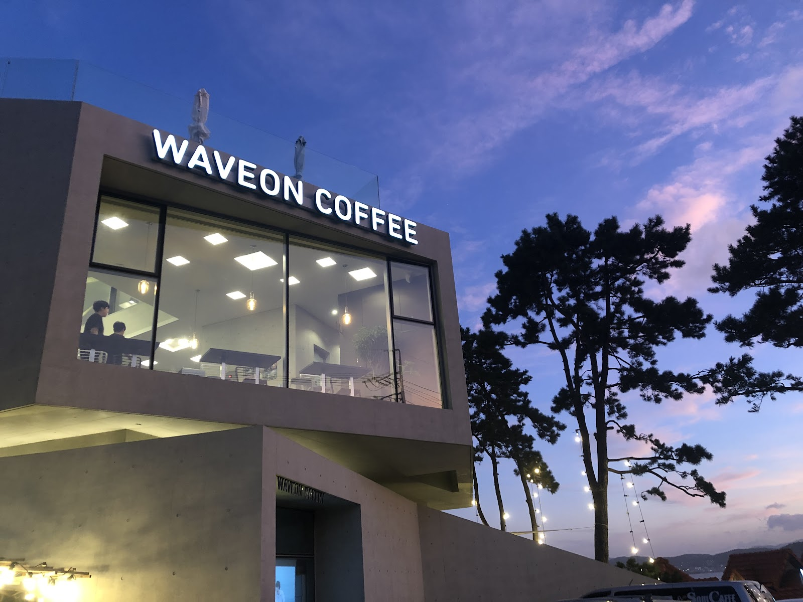

Waveon Coffee in Busan: A Sea-View Cafe Escape in Gijang
At a glance: Waveon Coffee is a destination cafe on Haemaji-ro in Gijang, Busan, known for its coastal setting and ocean views. It suits visitors looking to slow down over coffee and take in the scenery. Google lists it at 4.2 stars from 6,301 reviews; ratings can change over time.
Address: 286 Haemaji-ro, Gijang, Busan, South Korea
Busan is famous for its beaches, but the city’s appeal extends beyond its best-known urban waterfronts. In Gijang, on the city’s northeastern coast, Waveon Coffee offers a different sort of stop: a cafe visit built around the sea. Its address on Haemaji-ro places it in a coastal part of Busan, making it a natural choice for travellers who want to pair a coffee break with a drive or day out in the area.
Rather than treating Waveon as a quick caffeine stop, plan to give yourself time to settle in and enjoy the setting. Recent Korean-language search results describe an ocean-view cafe with a distinctive concrete exterior, multiple levels and rooftop seating. The exact experience depends on where you sit and on the conditions during your visit, but the appeal is clear: this is a place where the surrounding coastline is part of the outing.
What to expect at Waveon Coffee
Waveon’s architecture is part of its identity. The building is described in recent visitor coverage as a modern, exposed-concrete structure, a clean-lined contrast to the open coastal scenery. Search results also mention seating on the rooftop. If outdoor tables are available when you visit, they may offer a particularly direct way to enjoy the sea air; keep in mind that outdoor seating and comfort can depend on weather and conditions.
The cafe is also associated with bakery offerings. Coffee choices and other items may change, so it is best not to rely on an old menu or a past visitor’s order as a guide to what is available now. Check the official website before making the trip if you have a particular drink, baked good or dietary requirement in mind. For many visitors, though, the main draw is less about ordering something specific and more about taking a break in a striking coastal setting.
How to make the most of your visit
Think of Waveon Coffee as one part of a Gijang itinerary, rather than a cafe in the middle of a busy shopping district. You can plan a relaxed visit around a drink and time by the windows or outdoors, then continue exploring the coast. If you are travelling with companions, it is a good place to pause together; if you are visiting solo, bring a book or simply take time to watch the changing light over the water.
For the most satisfying experience, consider how the weather might affect your plans. On a clear day, an ocean-facing setting can be a highlight; on a windy or rainy day, outdoor seating may be less appealing. If you are visiting mainly for the view, check local conditions before setting out and be flexible about where you sit. The cafe can also be busy, so allow for the possibility that your preferred table may not be available right away.
Waveon has a substantial number of Google reviews: the supplied listing shows 4.2 stars from 6,301 reviews. That gives visitors a broad pool of feedback to consult, but individual preferences vary, and the rating is not a guarantee of a particular table, menu item or experience. Read a few recent comments if you want a sense of what other customers have encountered lately.
Practical planning
Waveon Coffee is at 286 Haemaji-ro, Gijang, Busan. Use the Google Maps link below to check the location and plan your route from wherever you are staying. This guide does not list opening hours, prices or transport instructions because these details can change; confirm them through the cafe’s official channels or a current map listing before travelling. If you are arranging a longer coastal outing, leave some flexibility in your schedule rather than assuming the cafe will be a quick stop.
Recent search results also surfaced Korean-language recommendations for Waveon as an ocean-view cafe, though a direct Naver local match was not confirmed. For visitors who do not read Korean, the official website and Google Maps listing are the simplest starting points for checking current information and navigation.
Good to know
- Best for: A leisurely coffee break with coastal scenery in Gijang.
- Address: 286 Haemaji-ro, Gijang, Busan, South Korea.
- Plan ahead: Check current opening information, menu details and route before you go.
- Seating: Recent search coverage mentions rooftop seating, but availability and comfort may depend on the weather and how busy the cafe is.
- Google rating: 4.2/5 from 6,301 reviews, according to the supplied listing; ratings may change.
FAQ
Is Waveon Coffee worth visiting for the view?
It is known as an ocean-view cafe in Gijang, so it is a strong option if you want a coffee stop with coastal scenery. Your view will depend on seating and conditions on the day.
Does Waveon Coffee have outdoor seating?
Recent Korean-language search results mention rooftop seating. Check current conditions and availability before planning specifically around an outdoor table.
Where can I check current details before visiting?
Use the official website for cafe information and Google Maps for the location and route. Confirm hours and menu details before setting out.